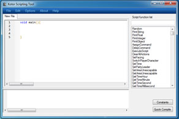

The editor behaves much like a normal text editor, but it includes more advanced features like Syntax Highlighting, Line numbers, Find, Find and Replace, and more.
Textbox
Here in the textbox is where the bulk of you script will be managed. Inside it is where you will write you code to be saved and compiled later.
Function list
In this list you will find all of the functions outlined in the nwscript.nss file. If you click on any function in the list the function information box in the lower right hand side of the screen will populate with the function info provided in the nwscript.nss file complete with comments. If you double click the item in the list it will be added to the currently selected line in the editor.
Syntax highlighting
Syntax highlighting will happen automatically as you type in the editor. As the text processor find keywords it knows it will color them with thier associated colors.
Constants button
The constants button will open up a window with a list populated with all of the contants from the nwscript file. If you double click an item in the list it will be added to the current line in the text editor.
{kind=link}